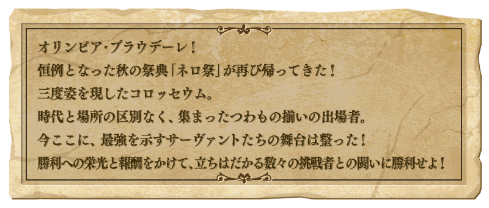
◆活動舉辦期間◆
2017年9月6日(三) 17:00～9月20日(三) 12:59
◆活動概要◆
舉辦期間限定活動「尼祿祭再臨 ～2017 Autumn～」！
活動期間中會出現2種類的活動關卡！
挑戰跟Servant戰鬥的大會關卡，能獲得可交換豪華報酬的活動道具。
另外，挑戰無法接關的超高難易度戰鬥明星賽關卡，除了7個的高難易度關卡外再追加「尼祿祭再臨 ～2016 Autumn～」的復刻關卡。
◆活動参加條件◆
只限通過「特異點F 炎上汙染都市 冬木」的Master才能參加
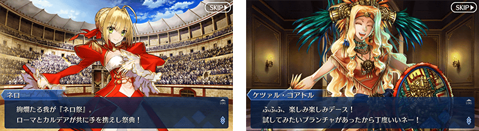

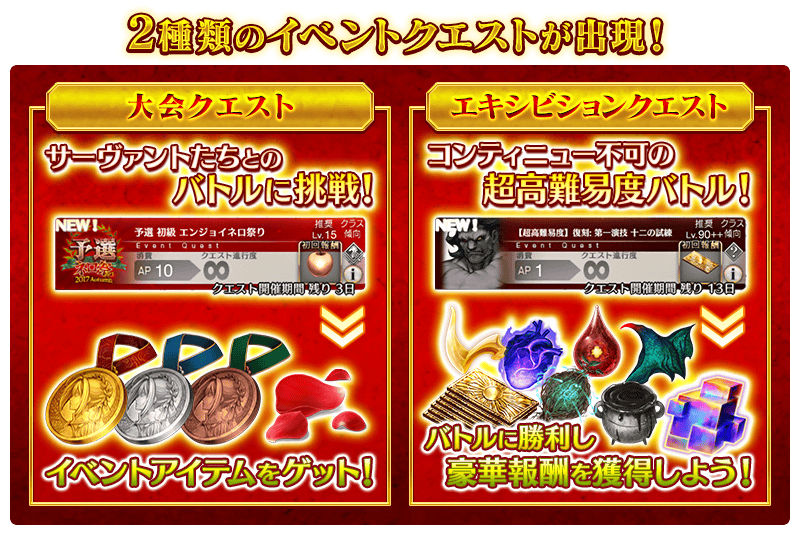
期間中會出現大會關卡。
大會關卡會根據難易度改變對戰的Servant。
還有，隨著時間表的進行會變化預選、本戰、決賽與關卡內容。
挑戰關卡，獲得尼祿獎章和深紅花瓣吧！
| 尼祿祭預選 | |
|---|---|
| 舉辦期間 | 9月6日(三) 17:00～9月9日(六) 22:59 |
| 消耗AP | 初級(AP10)、中級(AP20)、上級(AP30)、超級(AP40)、勇者級(AP40)、王者級(AP40) |
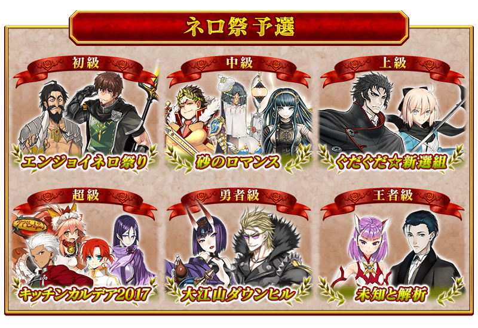
| 尼祿祭本戰 | |
|---|---|
| 舉辦期間 | 9月9日(六) 23:00～9月14日(四) 22:59 |
| 消耗AP | 初級(AP10)、中級(AP20)、上級(AP30)、超級(AP40)、勇者級(AP40)、王者級(AP40) |
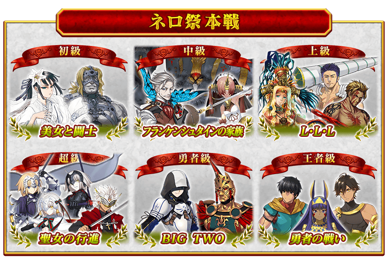
| 尼祿祭決勝 | |
|---|---|
| 舉辦期間 | 9月14日(四) 23:00～9月20日(三) 11:59 |
| 消耗AP | 初級(AP10)、中級(AP20)、上級(AP30)、超級(AP40)、勇者級(AP40)、王者級(AP40) |
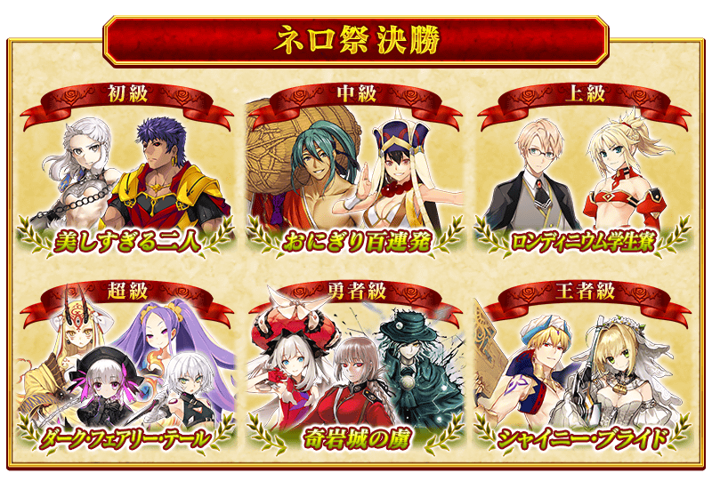
對上使用特殊技能等持有與平常相異攻擊方式的敵人，附有無法接關限制的挑戰超高難易度關卡。
「尼祿祭再臨 ～2017 Autumn～」的超高難易度關卡設有隊伍的編成限制。
通過關卡的話可獲得呼符等豪華報酬。
※活動期間中，關卡將逐日開放。
※明星賽關卡就算在通過後也不會消失，能無數次挑戰。關卡通過報酬、戰利品、MasterEXP、魔術禮裝EXP、絆點數只限在初次通過時獲得。
※關於復刻版的「尼祿祭再臨 ～2016 Autumn～」的明星賽關卡，變更相對前次關卡的推薦Lv標示。只是顯示的變更，實際的關卡內容並未變更。
【尼祿祭再臨 ～2016 Autumn～ 復刻明星賽關卡】
| 關卡名 | 時間表 | 通過報酬 |
|---|---|---|
| 【超高難易度】復刻:第一演技 | 9月6日(三) 17:00～ 9月20日(三) 11:59 |
戰馬的幼角×5、呼符×1 |
| 【超高難易度】復刻:第二演技 | 9月6日(三) 17:00～ 9月20日(三) 11:59 |
黑獸脂×5、呼符×1 |
| 【超高難易度】復刻:第三演技 | 9月6日(三) 23:00～ 9月20日(三) 12:59 |
精靈根×5、呼符×1 |
| 【超高難易度】復刻:第四演技 | 9月6日(三) 23:00～ 9月20日(三) 11:59 |
蠻神的心臓×5、呼符×1 |
| 【超高難易度】復刻:第五演技 | 9月7日(四) 23:00～ 9月20日(三) 11:59 |
血之涙石×5、呼符×1 |
| 【超高難易度】復刻:第六演技 | 9月7日(四) 23:00～ 9月20日(三) 11:59 |
龍之逆鱗×5、呼符×1 |
| 【超高難易度】復刻:終演 | 9月8日(五) 23:00～ 9月20日(三) 11:59 |
傳承結晶×1、呼符×1 |
| 【超絕難易度】復刻:終演 prototype | 9月17日(日) 23:00～ 9月20日(三) 11:59 |
呼符×1 |
(※9/17 23:00追記)
【尼祿祭再臨 ～2017 Autumn～ 明星賽關卡】
| 關卡名 | 時間表 | 通過報酬 |
|---|---|---|
| 【超高難易度】第一演技 | 9月9日(六) 23:00～ 9月20日(三) 11:59 |
混沌之爪×5、呼符×1 |
| 【超高難易度】第二演技 | 9月10日(日) 23:00～ 9月20日(三) 11:59 |
原初的產毛×5、呼符×1 |
| 【超高難易度】第三演技 | 9月11日(一) 23:00～ 9月20日(三) 11:59 |
封魔之燈×5、呼符×1 |
| 【超高難易度】第四演技 | 9月12日(二) 23:00～ 9月20日(三) 11:59 |
奇奇神酒×5、呼符×1 |
| 【超高難易度】第五演技 | 9月14日(四) 10:00～ 9月20日(三) 11:59 |
智慧的聖甲蟲×5、呼符×1 |
| 【超高難易度】第六演技 | 9月15日(五) 21:00～ 9月20日(三) 11:59 |
咒獸膽石×5、呼符×1 |
| 【超高難易度】終演 | 9月16日(六) 23:00～ 9月20日(三) 11:59 |
傳承結晶×1、呼符×1 |
【關於隊伍的編成限制】
於「尼祿祭再臨 ～2017 Autumn～」 明星賽關卡的隊伍編成制限，在進行隊伍編成時，與隊伍成員同一的支援Servant存在的情況，將無法出撃。
※同名的Servant若是〔Alter〕和職階相異的情況則能夠編成。
|
於活動關卡收集「深紅花瓣」，在熱情的交換所交換獎品吧！ |
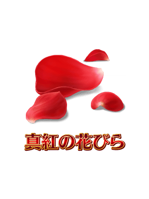 |
※第11次之後不會補充大獎道具及黃金的果實、白銀的果實。入手陣容內的全道具才能進行「獎品重置」。
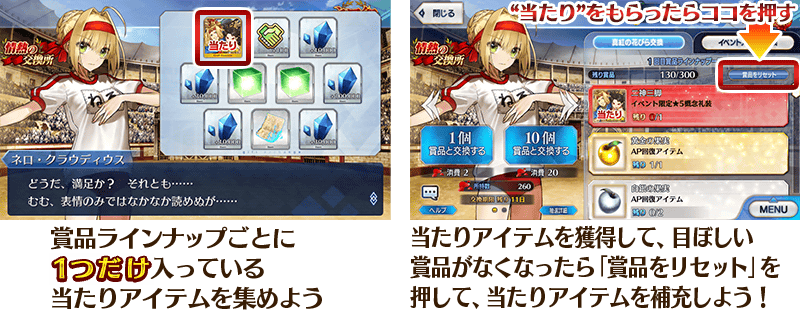
| 陣容次數 | 大獎道具 |
|---|---|
| 第1～5次 | 活動概念禮裝★5(SSR)「二神三脚」 |
| 第6次 | 靈衣「奧林匹亞的體操服」開放權 |
| 第7～10次 | 英靈結晶・日輪之芙芙ALL★4(ATK) |
◆獎品陣容◆
|
【大獎道具】 【技能強化素材、靈基再臨素材】 【其他道具】 |
◆超值攻略方法・其1◆
裝備可在活動道具交換入手的活動限定概念禮裝「チア・フォー・マスター」的話，會提升活動専用道具「深紅花瓣」的獲得數。
※請注意在各關卡的道具掉落率並非100％。
◆超值攻略方法・其2◆
裝備可在熱情的交換所入手的「二神三脚」的話，會提升在「尼祿祭再臨 ～2017 Autumn～」中自身的攻擊威力。
◆超值攻略方法・其3◆
裝備期間限定概念禮裝装備的話，會各自提升活動専用道具「尼祿獎章〔金〕」「尼祿獎章〔銀〕」「尼祿獎章〔銅〕」。
※請注意在各關卡的道具掉落率並非100％。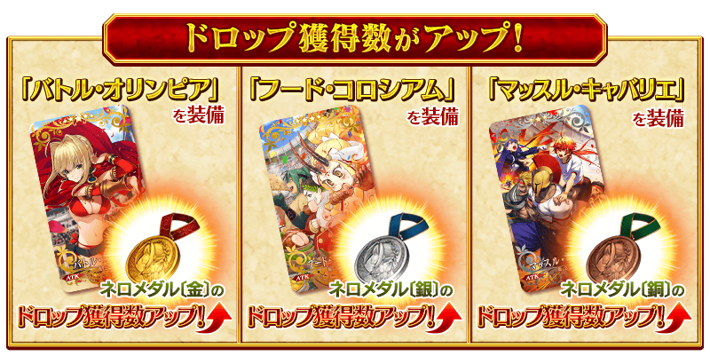
| 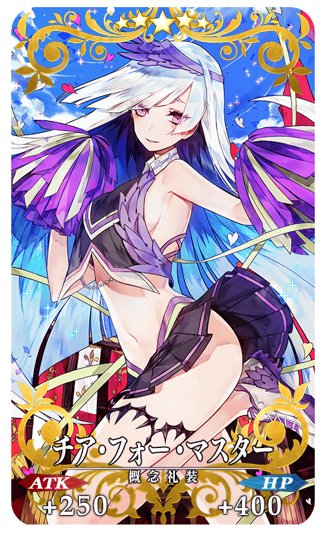 |
◆活動限定概念禮裝◆ |
|
★★★★★SSR |
◆交換方法◆
交換期間:2017年9月6日(三) 17:00～9月27日(三) 11:59
※交換期間結束後「深紅花瓣」｢尼祿獎章〔金〕｣｢尼祿獎章〔銀〕｣｢尼祿獎章〔銅〕｣會消失。
自達文西工房內的「活動道具交換」可用活動道具來交換以下的道具。
◆可用尼祿獎章〔金〕交換的道具◆
|
【活動限定概念禮裝】 【技能強化＆靈基再臨素材】 【其他道具】 |
◆可用尼祿獎章〔銀〕交換的道具◆
|
【活動限定概念禮裝】 【技能強化＆靈基再臨素材】 【其他道具】 |
◆可用尼祿獎章〔銅〕交換的道具◆
| 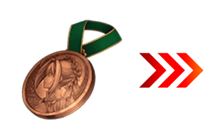 |
【活動限定概念禮裝】 【技能強化＆靈基再臨素材】 【其他道具】 |

為了錯過在2016年舉辦的「尼祿祭再臨 ～2016 Autumn～」內容的玩家，在期間限定活動「尼祿祭再臨 ～2017 Autumn～」的舉辦期間中追加「第2次尼祿祭！」的復刻劇本關卡。
※「尼祿祭再臨 ～2016 Autumn～」的復刻劇本關卡只有開場。
新開放「★4(SR)尼祿・克勞狄烏斯(Saber)」的靈衣。
於期間限定活動「尼祿祭再臨 ～2017 Autumn～」熱情的交換所，得到「★4(SR)尼祿・克勞狄烏斯(Saber)」的靈衣開放權吧！
想開放「★4(SR)尼祿・克勞狄烏斯(Saber)」的靈衣「奧林匹亞的體操服」的話，除了靈衣開放權外必須再加上以下的開放條件和素材。
※在「尼祿祭再臨 ～2017 Autumn～」追加靈衣的Servant只有「★4(SR)尼祿・克勞狄烏斯(Saber)」。
※「★4(SR)尼祿・克勞狄烏斯(Saber)」的靈衣開放権只能在「尼祿祭再臨 ～2017 Autumn～」的舉辦期間取得。
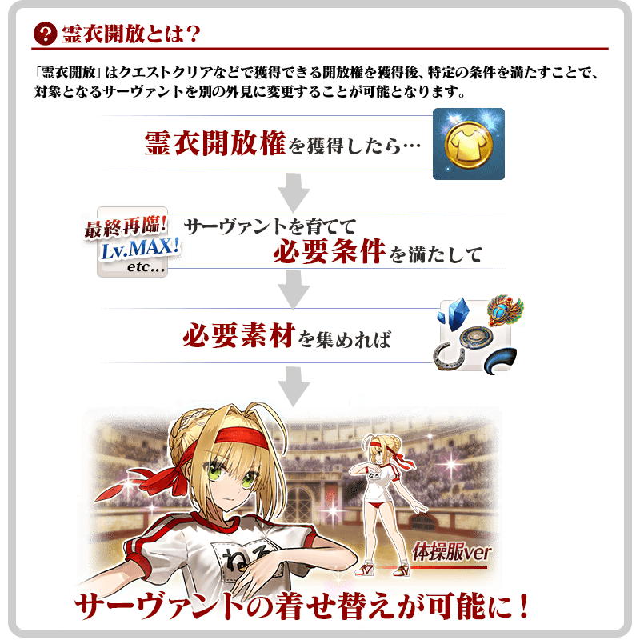
※「靈衣開放」後自動切換戰鬥角色和圖示。若想回到「靈衣開放」前的狀態和變成其他再臨階段的情況，可自Servant詳細畫面變更。
※「靈衣開放」只變更Servant的外觀，職階和能力等並無變化。

「靈衣開放」可自強化畫面選擇。
介紹開放靈衣「奧林匹亞的體操服」「★4(SR)尼祿・克勞狄烏斯」的寶具演出「童女謳う華の帝政」！
在Fate/Grand Order官方網站內的公告中，公開了開放靈衣「奧林匹亞的體操服」「★4(SR)尼祿・克勞狄烏斯」的寶具演出。敬請確認。
◆「尼祿祭再臨 ～2017 Autumn～Pick Up召喚(每日交替)」期間◆
期間:2017年9月6日(三) 17:00～9月20日(三) 11:59
以期間限定舉辦「尼祿祭再臨 ～2017 Autumn～Pick Up召喚(每日交替)」！
為了記念活動舉辦，「★5(SSR)尼祿・克勞狄烏斯〔Bride〕」 「★5(SSR) 布倫希爾德」以每日交替Pick Up！
另外，做為尼祿祭的主角「★4(SR)尼祿・克勞狄烏斯(Saber)」常駐Pick Up。
詳情請在聖晶石召喚畫面左下的召喚詳細確認。
※尼祿・克勞狄烏斯〔Bride〕與布倫希爾德在Pick Up期間結束後，不會追加到故事召喚。
※Pick Up期間中，尼祿・克勞狄烏斯(Saber)就算在第二特異點通過前也能入手。
裝備新登場的期間限定概念禮裝「★5(SSR)バトル・オリンピア」「★4(SR)フード・コロシアム」「★3(R)マッスル・キャバリエ」的話會提升活動専用道具的掉落獲得數。
※「★3(R)マッスル・キャバリエ」在Pick Up期間中，也能在友情點數召喚獲得。
Pick Up期間中，期間限定Servant、Pick Up Servant、期間限定概念禮裝的出現機率提升！
10次召喚中確定1張★4(SR)以上和確定1位★3(R)以上的Servant！
※確定★4(SR)以上包含Servant和概念禮裝。
※所謂「出現機率提升」意指比同稀有度的Servant及概念禮裝出現機率更高的設定。
| 每日交替Pick Up期間 | 每日交替Pick Up內容 |
|---|---|
| 9月6日(三) 17:00 ～ 9月7日(四) 22:59 | 布倫希爾德 尼祿・克勞狄烏斯(Saber) |
| 9月7日(四) 23:00 ～ 9月8日(五) 22:59 | 尼祿・克勞狄烏斯〔Bride〕 尼祿・克勞狄烏斯(Saber) |
| 9月8日(五) 23:00 ～ 9月9日(六) 22:59 | 尼祿・克勞狄烏斯〔Bride〕 布倫希爾德 尼祿・克勞狄烏斯(Saber) |
| 9月9日(六) 23:00 ～ 9月10日(日) 22:59 | 布倫希爾德 尼祿・克勞狄烏斯(Saber) |
| 9月10日(日) 23:00 ～ 9月12日(二) 22:59 | 尼祿・克勞狄烏斯〔Bride〕 尼祿・克勞狄烏斯(Saber) |
| 9月12日(二) 23:00 ～ 9月14日(四) 22:59 | 布倫希爾德 尼祿・克勞狄烏斯(Saber) |
| 9月14日(四) 23:00 ～ 9月15日(五) 22:59 | 尼祿・克勞狄烏斯〔Bride〕 尼祿・克勞狄烏斯(Saber) |
| 9月15日(五) 23:00 ～ 9月16日(六) 22:59 | 尼祿・克勞狄烏斯〔Bride〕 布倫希爾德 尼祿・克勞狄烏斯(Saber) |
| 9月16日(六) 23:00 ～ 9月17日(日) 22:59 | 布倫希爾德 尼祿・克勞狄烏斯(Saber) |
| 9月17日(日) 23:00 ～ 9月19日(二) 22:59 | 尼祿・克勞狄烏斯〔Bride〕 尼祿・克勞狄烏斯(Saber) |
| 9月19日(二) 23:00 ～ 9月20日(三) 12:59 | 布倫希爾德 尼祿・克勞狄烏斯(Saber) |
※請注意會以每日交替變更Pick Up的Servant。
介紹尼祿・克勞狄烏斯〔Bride〕、布倫希爾德的寶具演出！
在Fate/Grand Order官方網站內的公告中，公開了「★5(SSR)尼祿・克勞狄烏斯〔Bride〕」及「★5(SSR)布倫希爾德」的寶具演出。敬請確認。
在達文西工房的「稀有稜鏡交換」追加布倫希爾德的體験關卡。
◆布倫希爾德體験關卡追加時間◆
2017年9月6日(三) 17:00～
◆追加道具◆
「500萬DL突破宣傳活動」限定「布倫希爾德體験關卡」開放
◆關卡通過報酬◆
呼符
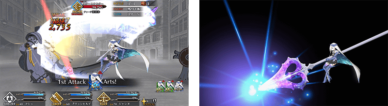
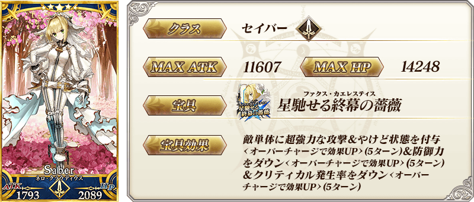
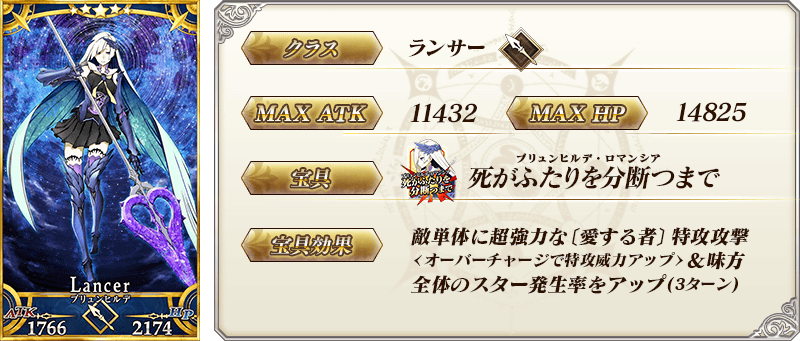
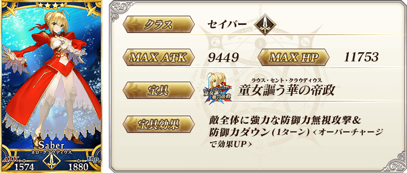
| 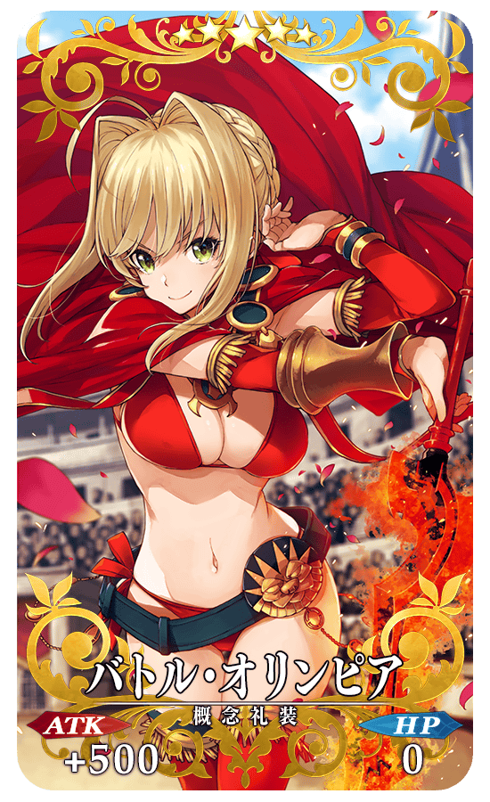 |
★★★★★SSR |
| 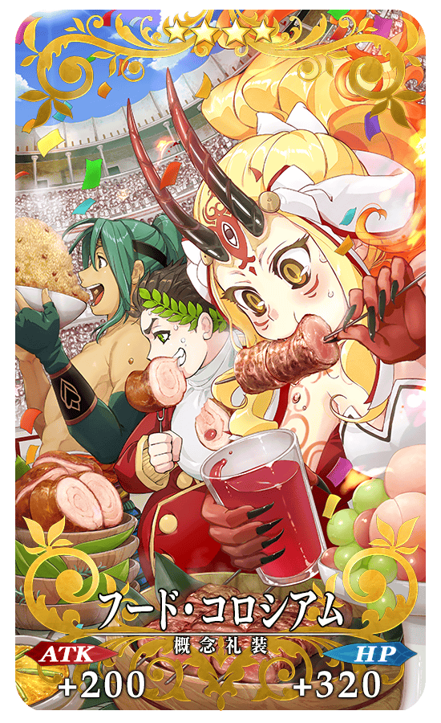 |
★★★★SR |
| 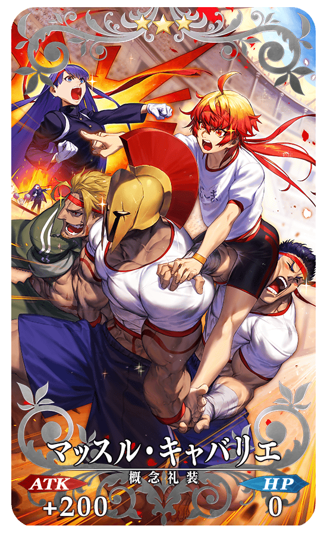 |
★★★R |
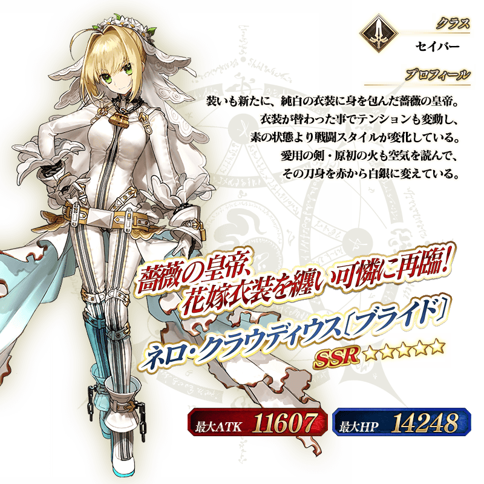
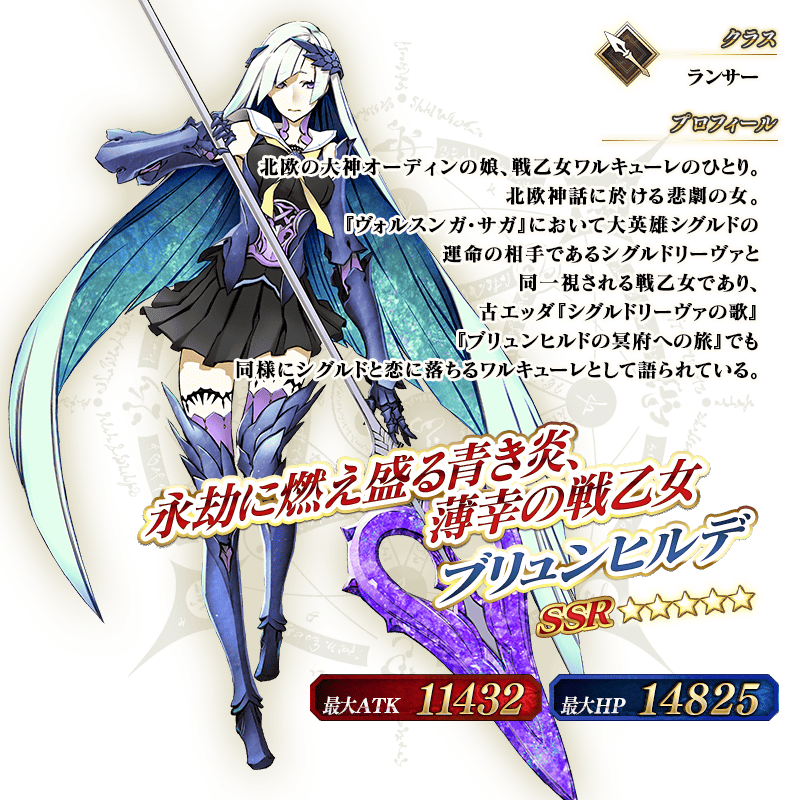